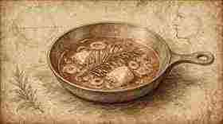
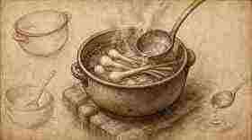
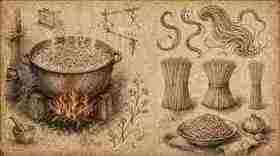
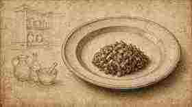
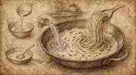
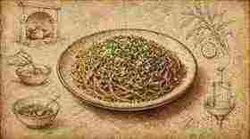

01
Tagliare i cipollotti sottilissimi.
Slice the spring onions very thinly.
Ratanà · Ricetta II · Tutorial
Ratanà · Recipe II · Tutorial
Cipollotto stufato a lungo, fondente e non rosolato, cremato con la pasta — struttura Fooby, tavole illustrate in stile Leonardo come i tutorial Italia Squisita.
Spring onion stewed until melting, never browned, creamed with the pasta — Fooby structure, Leonardo-style illustrated plates like the Italia Squisita tutorials.
← Scheda del quaderno ← Notebook cardTagliare i cipollotti sottilissimi.
Slice the spring onions very thinly.
In padella fredda: olio, burro e rosmarino.
In a cold pan: oil, butter and rosemary.

Sale, pepe, aceto e un mestolino d’acqua.
Salt, pepper, vinegar and a ladle of water.

Stufare almeno 10 minuti senza rosolare.
Stew at least 10 minutes without browning.

Cuocere gli spaghetti.
Cook the spaghetti.

Disporre il cipollotto sul fondo del piatto; aggiungere pasta, acqua di cottura e olio fino a crema.
Lay the spring onion on the base of the plate; add pasta, cooking water and oil until creamy.

Finire con pesto, formaggio, pane e la parte verde del cipollotto.
Finish with pesto, cheese, bread and the green part of the spring onion.
